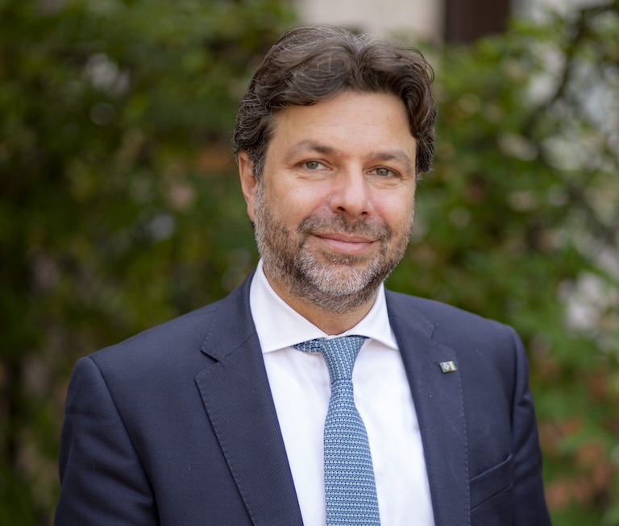

IGF Italia
Forum in ambito ONU sui temi della governance digitale, dei diritti e dell’intelligenza artificiale. igf-italia.org →
Aiuto imprese, pubbliche amministrazioni e organizzazioni a orientarsi nei processi di trasformazione tecnologica, istituzionale e strategica. Porto una prospettiva che unisce esperienza di governo, visione internazionale, capacità di advocacy e approccio imprenditoriale.
Nel mio percorso ho lavorato tra governo, Parlamento, organismi internazionali, forum multi-stakeholder e iniziative imprenditoriali. Questo mi consente di leggere il digitale non solo come tecnologia, ma come leva di trasformazione, posizionamento, regolazione, partnership e sviluppo.
Oggi metto questa esperienza a disposizione di chi deve affrontare temi complessi come intelligenza artificiale, trasformazione digitale, relazioni istituzionali, progettazione strategica, fondi e bandi.

Forum in ambito ONU sui temi della governance digitale, dei diritti e dell’intelligenza artificiale. igf-italia.org →
Azienda specializzata in AI, cyber, data governance, compliance strategica e accountability. ainnovaadvisory.com →
Startup innovativa che applica l’AI a educazione, inclusione e innovazione sociale. openfantasia.it →
Accompagno organizzazioni e decisori nell’adozione responsabile dell’intelligenza artificiale, tra compliance, accountability, rischio e impatto organizzativo. Aiuto a costruire framework interni solidi e a navigare il contesto regolatorio europeo e internazionale, dall’AI Act alle linee guida OCSE.
Lavoro sui processi di innovazione e modernizzazione con attenzione a organizzazione, competenze, servizi e governance dei dati. Traduco la visione strategica in percorsi concreti, misurabili e sostenibili nel tempo, con esperienza diretta in contesti pubblici e privati.
Aiuto a leggere il contesto pubblico, costruire interlocuzioni qualificate e sviluppare percorsi credibili tra policy, stakeholder e istituzioni. Porto la capacità di muoversi tra Parlamento, governo, organismi europei e forum internazionali in modo efficace.
Trasformo idee e priorità in iniziative strutturate, partnership solide e percorsi finanziabili, con esperienza diretta su fondi pubblici, europei e privati. Dalla visione al progetto operativo, dalla candidatura all’execution e al rendiconto.
Ho ricoperto incarichi di governo sui temi dell’innovazione e della trasformazione digitale, lavorato in contesti internazionali su AI governance e diritti digitali, guidato un forum nazionale riconosciuto in ambito ONU e sviluppato iniziative imprenditoriali che mi permettono di portare non solo visione e policy, ma anche capacità di costruzione, execution e sviluppo.
Sono disponibile per advisory, collaborazioni, interventi e progetti su AI governance, trasformazione digitale e relazioni istituzionali.